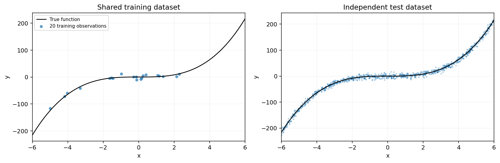

Regression comparison
Download resultsDataset
Training setting
Repulsion weight
Repulsion location
Cubic

20 training · 1000 test · seed 123
Generating function
f(x)=x^3\varepsilon\sim\mathcal N(0,\sigma_\varepsilon^2),\quad y=f(x)+\varepsilon,\quad \sigma_\varepsilon=62.5 * clip(Normal(0,1), -2, 2)
Test inputs: independent uniform observations over the full displayed domain.
Download dataset